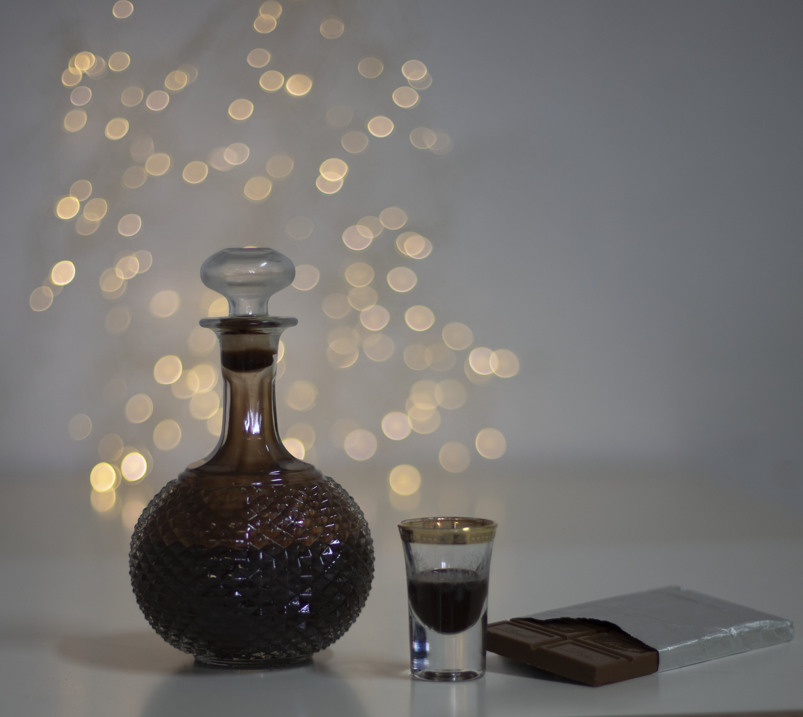
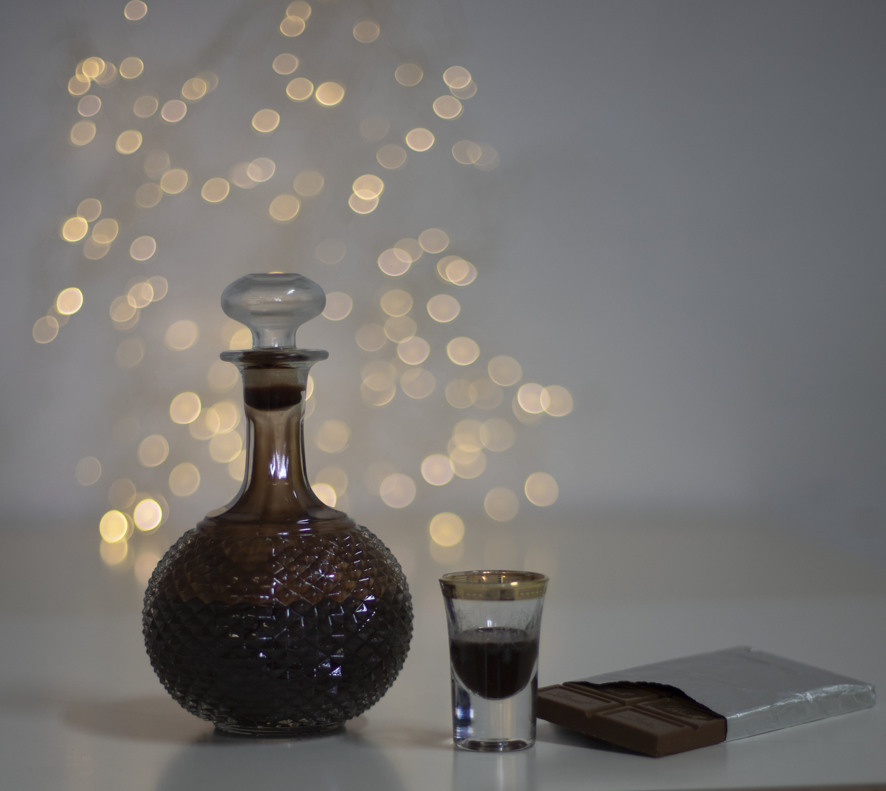
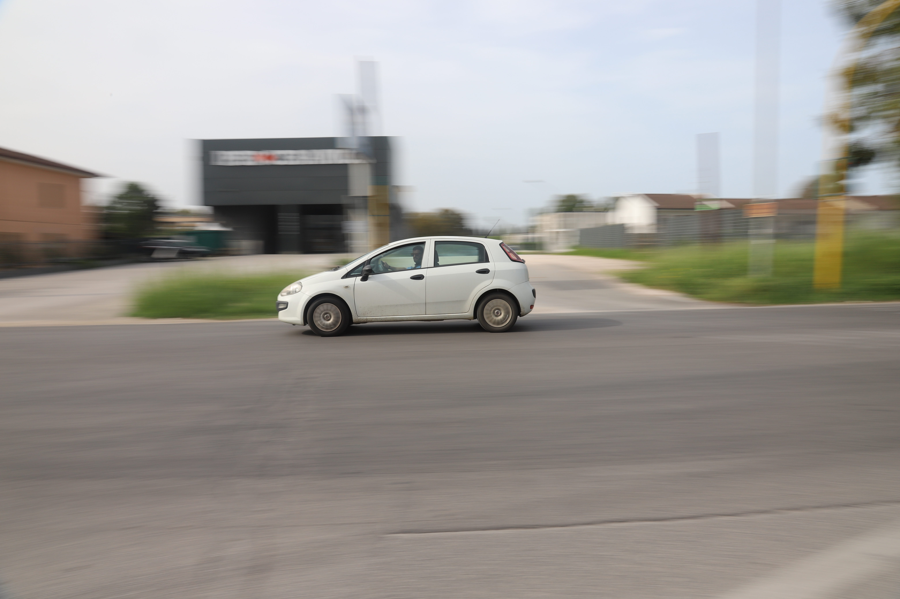
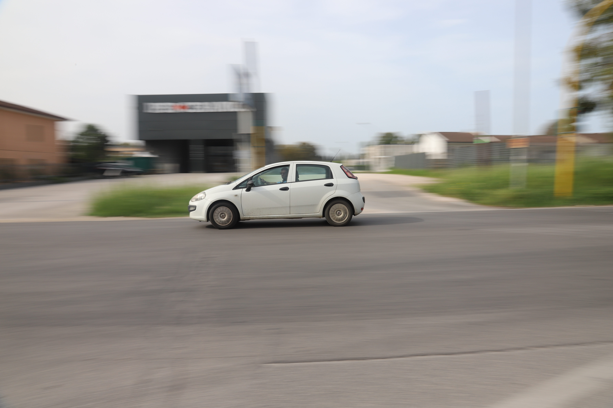
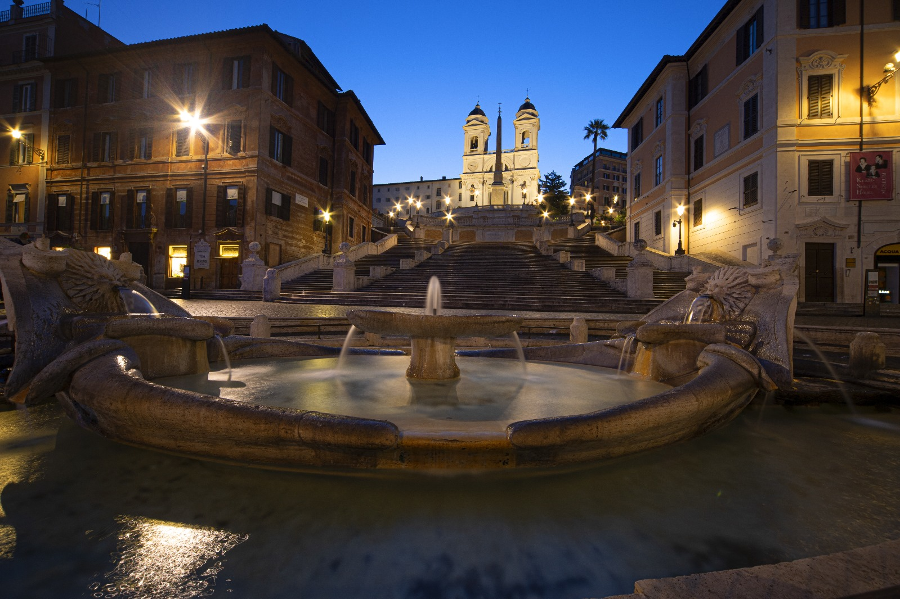
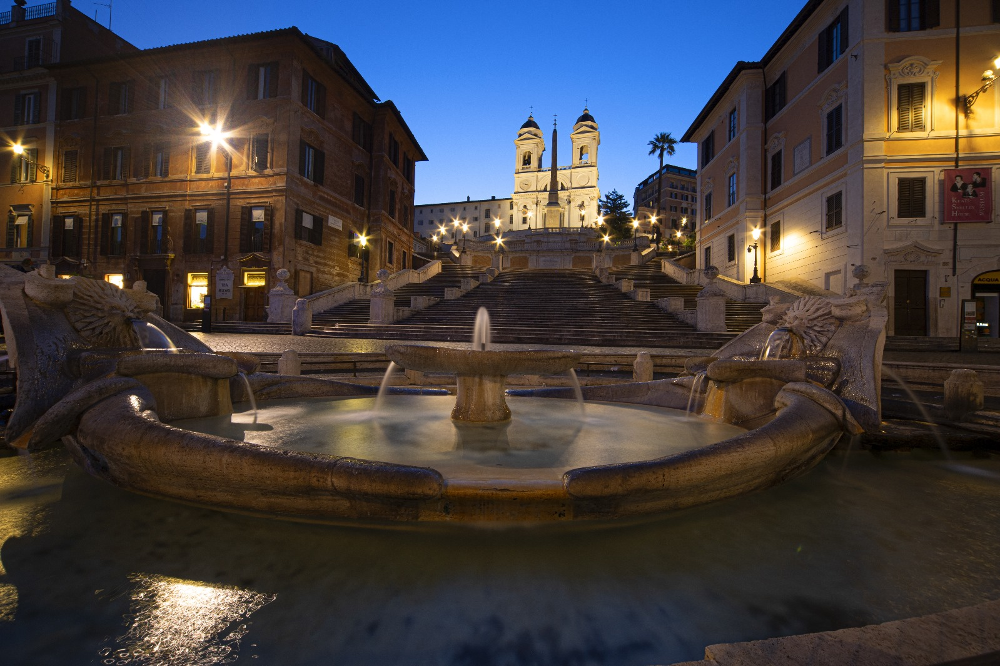
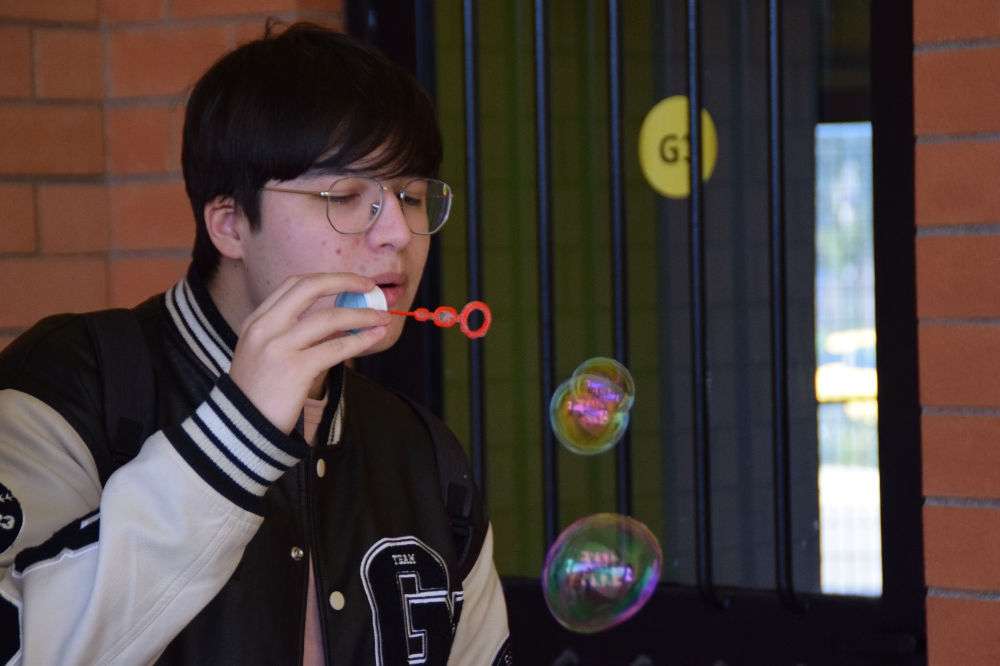
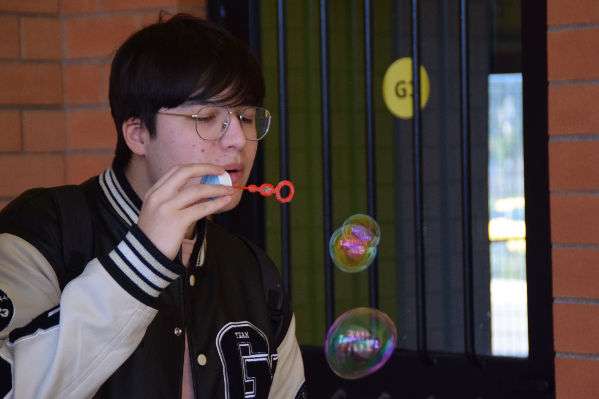
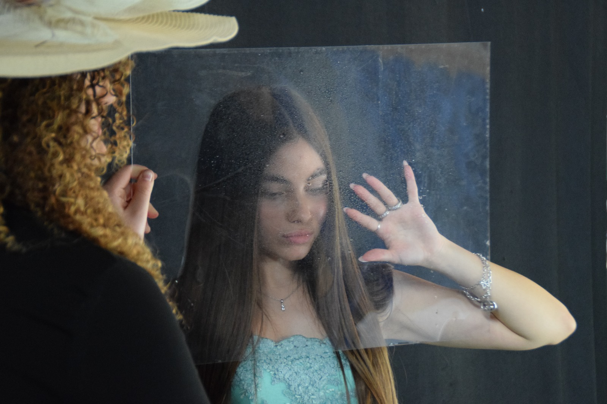
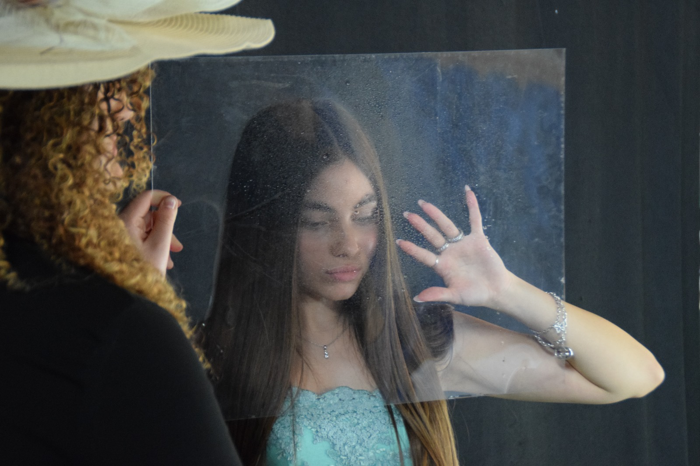

宁法之旅


宁静的河景及其水晶般的倒影。雄伟的树木凸显了秋季和春季的对比。 一个有着丰富历史和文化魅力的地方。


溪水清澈，倒映着春天植物茂盛的植被。凉爽的早晨，宁法花园里有一个宁静的角落， 有一个绿色的池塘。


一棵春天盛开的树，开着精致的白色和粉红色的花朵，与周围的绿色植物形成鲜明对比。 茂密的竹林直冲云霄，是宁法花园中一处充满暗示且宁静的角落。
 



 



 



 


 
